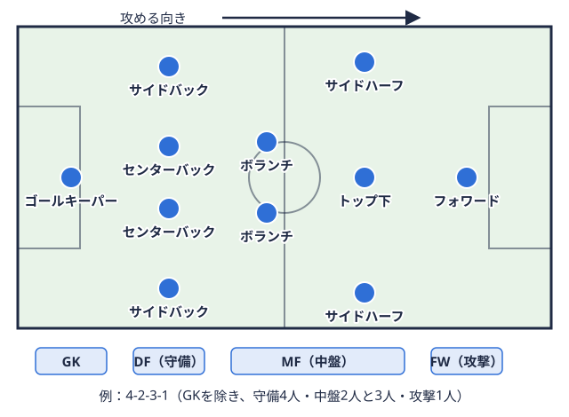

部員向け 2026-11-05
大学サッカーの個人練習メニュー｜一人でできる自主練の組み立て方
「全体練習のあとに自主練をしたいけれど、何をすればいいのか分からない」「オフの日に一人でできるメニューを決めたい」。大学サッカー部では、全体練習だけでなく、各自の課題に合わせた個人練習の時間をどう使うかが話題になることがあります。結論から言うと、「これをやれば上達が約束される」という万能の個人練習メニューは、今回調べた範囲では公的な資料にも見つかりませんでした。代わりに、自分で組み立てるときの考え方と、公式に公開されている素材の使い方を整理できます。
この記事では、メニューそのものの羅列ではなく、(1)組み立て方の手順、(2)日本サッカー協会（JFA）やスポーツ庁が公開している一人でできる動画の使いどころ、(3)練習前の準備とやりすぎの防止、(4)サッカーマニアの2026年リーグ戦参加チームが一定の期間にわたって何試合も戦い、成績の合計で順位を決める大会の形式。用語辞典で見るデータから見える「自主練に時間を使いやすい時期」の順に紹介します。なお、ここで述べる組み立て方の一部は編集部の整理であり、特定の指導者や大学の方針を代表するものではありません。
個人練習メニューを作る前に決める4つのこと
メニューを探し始める前に、次の4点を決めておくと、練習がその日の思いつきになりにくくなります。これは編集部が整理した進め方の一例です。
| 決めること | 考えるポイント |
|---|---|
| ① 目的 | 「何ができるようになりたいか」を一つに絞る。例: 利き足でない足のキックの精度、狭い場所でのボールコントロール、スプリント後の切り返しなど |
| ② 場所と道具 | グラウンド、人工芝コート、体育館、自宅の部屋のどれを使えるか。ボール以外にマーカー、壁、ミニゴールが使えるか |
| ③ 時間と頻度 | 1回何分を週何回にするか。授業・アルバイト・全体練習の後に無理なく入る長さにする |
| ④ 記録 | やった内容と、できたこと・できなかったことを1行で残す |
大切なのは、①の目的に対して②〜③の条件で実行できる内容を選ぶことです。たとえばボールの扱いを磨きたいなら、広いグラウンドがなくても取り組める内容があります。一方、スプリントや切り返しのように広い場所が必要な内容は、場所の確保が前提になります。
自分の課題が分からない場合は、全体練習や試合の映像を見直したり、同じポジションの先輩やコーチに「いま足りないと思う点」を聞いたりしてみてください。ポジションごとに求められる役割は異なります。基礎的な整理は大学サッカー部のポジション適性と特徴、ポジション別の詳しい役割はセンターバック・ボランチ・サイドバックの記事にまとめています。
公式に公開されている「一人でできる」動画の使い方
個人練習の素材として、スポーツ庁（文部科学省サイト内）の「スポトレ動画ナビ」には、JFAが提供するサッカーの動画が整理されています。同ページで確認できたサッカーの動画は次の4本です。
| 動画 | ページ記載の内容 | 実施条件・対象（ページ記載） |
|---|---|---|
| 広い場所でなくてもできる!! サッカー日本代表トレーニング その① | 片足でバランスをとるトレーニング | 自宅でも可・2人〜少人数でも可・始めたばかりの人向け |
| 浅野拓磨のいろいろなボールの蹴り上げ方 | ボールを蹴り上げる方法の紹介 | 一人でも自宅でも可・始めたばかりの人向け |
| ナショナルGKゴールを守る選手で、チームで唯一、ペナルティエリア内で手を使える。パスをつなぐ役もこなす。  用語辞典で見るキャンプ［シュートストップ］ | ゴールキーパーのキャッチングの練習 | 広い場所・2人〜少人数でも可・基礎練習をしたい人向け |
| ストライカーに必要なアジリティトレーニング | ジグザグステップを使った敏捷性の練習 | 広い場所・一人でも可・レベルを上げたい人向け |
このページの主な対象は中学生で、「中学生の方へ」「指導者の方へ」の案内が設けられています。大学生向けに作られたものではないため、動画の内容がそのまま大学の競技レベルに合うとは限りません。ただし、「一人で・限られた場所でできる」という条件が明記されているため、自分の目的に合う動画があるかを探す入口として使えます。実施する際は、動画の提供元ページで人数や必要なスペースを確認し、安全に配慮してください。
また、JFAは新型コロナウイルスの流行期に、自宅で過ごす人向けのコンテンツを紹介する特設ページ「Sports assist you」を公開しており、「JFAチャレンジゲーム」（個人でテクニックを身につけるプログラム）や、育成年代向けのコンディショニングプログラムが載っています。ただし、このページの記述は2020〜2021年頃のもので、期間限定公開とされていた内容も含まれます。現在も同じ内容が見られるかは、JFA公式サイトで確認する必要があります。
練習前の準備はウォームアップから
個人練習でも、いきなり全力で動き出すと負担がかかる場合があります。JFAは、FIFAが開発した傷害予防のウォームアッププログラム「FIFA 11+」を自サイトで紹介しています。JFAの11+のページ（動画）には、次の構成が記載されています。
- PART1（8分）: ランニングエクササイズ（種目1〜6）
- PART2（10分）: 筋力・プライオメトリクス・バランス（種目7〜12。各種目に初級・中級・上級のレベルがある）
- PART3（2分）: ランニングエクササイズ（種目13〜15）
合計は20分です。同ページには、推奨される実施頻度や、効果の説明は書かれていません。したがって「週◯回行えば怪我が減る」といった数字は、この記事では示しません。実際の取り入れ方は、チームのトレーナーやコーチに相談してください。長めの自主練の前にこうした準備の時間を確保しておくと、練習の質を保ちやすくなると考えられます。
怪我の予防という点では、前十字靭帯の怪我を防ぐトレーニングや肉離れからの復帰の目安の記事も参考にしてください。
「やればやるほど良い」とは限らない
自主練は、増やしすぎると負担が積み重なる場合があります。JFAのメディカル情報「ケガへの対応と予防」では、スポーツ障害はオーバーユース症候群とも呼ばれ、予防にはトレーニングのコントロールが重要であると説明されています。オーバートレーニングには、トレーニングの強度・時間・頻度が関係するとされ、選手一人ひとりのコンディションを個別に評価して対応することが重要だとしています。同ページには、休養日の具体的な日数の目安は書かれていません。
また、青森県サッカー協会の医科学コラム No.47（2021年1月）は、肉離れについて、練習があまりできていない状態から通常の練習に戻ったときや、合宿・遠征などで急激に運動強度が上がったときに発生率が高くなると述べています。全体練習に加えて自主練を足す場合は、長期休み明けなどに急に量を増やしすぎないよう、自分の体の状態を見ながら調整するのが無難です。
練習量の全体像は大学サッカー部の練習量（週何回か）で整理しています。自主練は全体練習の負荷に上乗せされるものとして考えると、組み立てやすくなります。食事や補食も練習量とセットで考える必要があるため、栄養・食事メニューとプロテインの摂取タイミングも合わせて確認してみてください。
リーグ戦の日程から「自主練に時間を使いやすい時期」を考える
個人練習にどの程度の時間を割けるかは、リーグ戦のカレンダーにも左右されます。サッカーマニアに登録されている2026年のリーグ戦データ（2026年11月5日時点・各リーグ戦のみ）から、チームごとの試合間隔と、試合が登録されていない月を集計しました。総理大臣杯や天皇杯予選、練習試合などは含まれず、関東のように消化済みの試合のみが登録されるリーグもあるため、実際の日程とは異なる場合があります。
| リーグ | 試合が登録されている月 | 試合の登録がない月（4〜11月） | チームの試合間隔の最大 |
|---|---|---|---|
| 関東大学サッカーリーグ1部 | 4・5・6・9・10月 | 7・8・11月 | 109日 |
| 関東大学サッカーリーグ2部 | 4・5・6・7・9・10月 | 8・11月 | 108日 |
| 関西学生サッカーリーグ1部 | 4・5・7・9・10・11月 | 6・8月 | 70日 |
| 北信越大学サッカーリーグ1部 | 4・5・6・9・10月 | 7・8・11月 | 106日 |
この集計から言えるのは、次の点です。
- 4リーグのいずれも、8月に試合は登録されていない。夏は公式のリーグ戦が組まれにくい時期であることがデータ上うかがえる
- 4リーグとも、チームごとの試合間隔の中央値は7日（週1試合のペース）で、シーズン中は「試合を軸にした1週間」の繰り返しになりやすい
- 一方で、関東・北信越のチームには試合間隔が100日を超える例があり、この間の過ごし方がチームの方針や個人の取り組みに委ねられる部分は大きいと考えられる
ただし、試合のない期間に何をしているかは、このデータからは分かりません。大会や合宿、練習試合が入っている場合もあります。各リーグの日程は、関東1部の日程・結果、関東2部の日程・結果、関西1部の日程・結果、北信越1部の日程・結果で確認できます。自分のチームの試合間隔を見て、個人練習の計画に反映させる使い方もできます。
自分が所属するリーグの順位や位置づけを確認したい場合は、関東1部の順位表やチーム一覧も活用してください。リーグの仕組みについては大学サッカーのリーグ種類（全国9地区）で解説しています。
練習ログのつけ方（例）
個人練習は、やりっぱなしだと効果が分かりにくくなります。編集部の整理として、1回あたり1〜2分で書ける簡単な記録の例を挙げます。
| 項目 | 記入例 |
|---|---|
| 日付・場所 | 11/5・大学グラウンド |
| 目的 | 利き足でない足でのパスの精度 |
| 内容 | 壁を使ったパス、時間は約20分 |
| できたこと | 5本連続で狙った位置に止められた |
| 次回の課題 | 強いボールが来たときの対応 |
記録を残しておくと、全体練習で指導者に相談するときにも「ここまではできる、ここからが難しい」と具体的に伝えやすくなります。戦術的な理解を深めたい場合は、戦術用語の一覧を手元に置いておくと、指導者との会話で役立つ場合があります。
出場機会が少ないときの個人練習
試合に出られない時期は、個人練習がモチベーションの支えにも、焦りの原因にもなる場合があります。そうした場面での気持ちの整理は出場機会が少ない部員のモチベーションの保ち方にまとめています。個人練習で「何をやったか」を記録しておくことは、自分の取り組みを客観的に確認する助けになるかもしれません。
まとめ：メニューを探す前に、目的・場所・時間・記録を決める
- 万能の個人練習メニューは、今回調べた範囲では見つからなかった。目的・場所と道具・時間と頻度・記録の4点を決めて、自分用に組み立てる
- スポーツ庁の「スポトレ動画ナビ」には、JFAが提供する一人でも実施できる動画（ボールの蹴り上げ、アジリティ、片足バランス）が載っている。ただし主な対象は中学生で、実施前に条件の確認が必要
- 準備にはFIFA 11+（JFAのページでは計20分の構成）などのウォームアップが紹介されているが、実施頻度や効果の数値はページに記載がない
- JFAは、強度・時間・頻度を含めたトレーニングのコントロールの重要性を示している。全体練習に上乗せする量は、体の状態を見ながら調整する
- 2026年のリーグ戦データでは、4リーグとも8月に試合が登録されておらず、夏や試合間隔が長い時期は個人練習の計画を立てやすい時期の一つと考えられる
まずは「今週はこの一つの課題だけ」と決めて、20分程度の短いメニューを記録しながら試してみてください。うまくいかなかった点も含めて記録しておくと、次の練習計画を立てやすくなります。
参考にした情報
- スポーツ庁（文部科学省）「スポトレ動画ナビ（training videos navi）」（サッカー欄の4本）
- 日本サッカー協会（JFA）「11+（イレブンプラス）」
- 日本サッカー協会（JFA）「#SportsAssistYou #いまスポーツにできること」（2020〜2021年頃の掲載内容）
- 日本サッカー協会（JFA）「ケガへの対応と予防」
- 青森県サッカー協会 医科学コラム No.47「肉離れに対するリハビリテーションと予防」（2021年1月）: PDF
- 試合間隔・試合月の集計: サッカーマニア登録の2026年リーグ戦データ（2026年11月5日時点・各リーグ戦のみ）
この部活・競技を応援したい方へ。
取材してほしい部活を募集中
オフシーズン・引退後に、長期インターンという選択
部活で培った力を実務で試す。16タイプ診断（30秒）で合う企業がわかります。